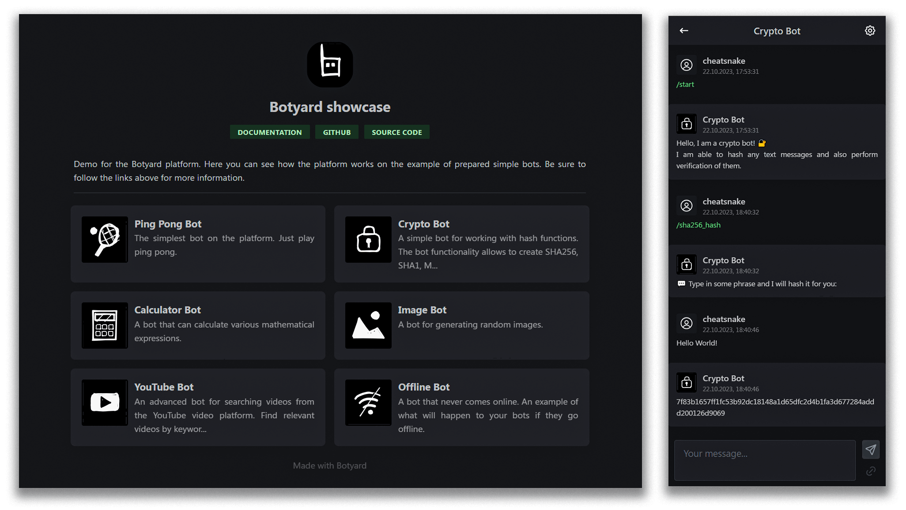
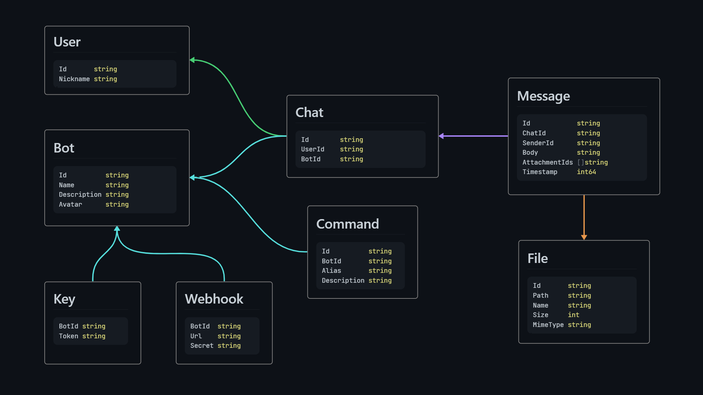

Intro
Botyard is a self-hosted platform that offers a comprehensive solution for the development, management, and interaction with chatbots.
It provides a preconfigured backend server equipped with a user-friendly HTTP API, enabling easy platform management and chatbot development in any programming language.
Additionally, it features a streamlined web client application designed for seamless interaction with pre-built bots.

Project architecture
Botyard architecture is pretty staightforward. It all revolves around only three main components: bots, users and chats.

User are the simplest of them all. This component is only responsible for user indetification in the system. It is so minimalistic that it contains only an identifier and a nickname.
Bot is the most advanced component. Each bot is a small independent system, which implies the ability to handle messages from multiple users. Commands can be added to the bot, which can be used to describe its functionality as simply and concisely as possible. Since each bot can be developed and managed independently, each bot has an access key for this purpose. Finally, for efficient and fast processing of user messages, a webhook can be attached to each bot.
Chat is the connecting link between the user and the bot. Chats contain messages that can be sent by both the user and the bot. Each message contains a body (text information). Additionally, you can attach files to each message.
What is it good for?
Botyard is perfect as a transport layer for delivering data from server applications to end users. Thanks to this, you can save resources and not develop the UI (frontend) part of your application separately.
For example, if you are developing applications based on artificial intelligence, in particular on Large Language Models (LLM), then interacting with them through bots is an extremely successful combination, which has already shown its power on the example of ChatGPT.
If you are developing CLI applications, then this will also allow you to expand the potential of your applications by expanding their scope of use.
What does it feel like?
The concept of bots is not new and is used in many other systems. For example, Telegram messenger has a whole API for bots. Or, the popular platform for voice and video calls Discord also has an advanced chatbot system.
Of course, it is not correct to say that Botyard can be a direct competitor among such giants, to put it mildly. Rather, it is an alternative that is much simpler and completely controlled by you.
What are the main benefits?
- Simplicity. No matter how much it has already been mentioned, but it really is.
- Fast and lightweight. The main part of the platform is written in Go - a fast, compiled and minimalistic programming language. The final binary file of the server weighs about 17 MB. And the initial start-up of the server allocates only about 1.2 MB of RAM.
- Open source. You can view the source code, offer your corrections and suggestions. Together we can make it better.